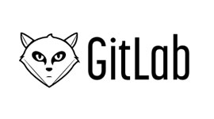

<div id="mikeUrlList" style="display: none">

    <div class="gallery-items">

        <div class="col-lg-3 col-md-4 col-xs-6 gallery-item gallery-popup all imike">
            <figure href=" http://www.imike.com/">
                
                眯客官网
            </figure>
        </div>
        <div class="col-lg-3 col-md-4 col-xs-6 gallery-item gallery-popup all imike">
            <figure href="http://oa.imike.com">
                
                oa系统
            </figure>
        </div>
        <div class="col-lg-3 col-md-4 col-xs-6 gallery-item gallery-popup all imike">
            <figure href="https://meican.com/">
                
                同学们，辛苦了。晚上点餐专用，请在3点之前点餐，3点过后请找前台MM
            </figure>
        </div>

        <div class="col-lg-3 col-md-4 col-xs-6 gallery-item gallery-popup all imike dev">
            <figure href="http://wiki.imike.cc">
                
                我们可以在Confluence上面进行创建，分享和讨论文件，想法，备忘录，规格，实体模型，图表和项目， 通过Confluence平台进行小组工作的协同和知识分享。
            </figure>
        </div>
        <div class="col-lg-3 col-md-4 col-xs-6 gallery-item gallery-popup all dev">
            <figure href="http://gitlab.imike.cc/">
                
                GitLab是利用 Ruby on Rails 一个开源的版本管理系统,实现一个自托管的Git项目仓库,可通过Web界面进行访问公开的或者私人项目。
            </figure>
        </div>
        <div class="col-lg-3 col-md-4 col-xs-6 gallery-item gallery-popup all dev qa opt">
            <figure href="http://10.4.4.228:8080/jenkins/">
                
                Jenkins是一个开源软件项目，旨在提供一个开放易用的软件平台，使软件的持续集成变成可能。
            </figure>
        </div>
        <div class="col-lg-3 col-md-4 col-xs-6 gallery-item gallery-popup all dev qa">
            <figure href="http://cn.rapapi.net/">
                
                接口管理工具，开源免费，接口自动化，MOCK数据自动生成，自动化测试，企业级管理。阿里妈妈MUX团队出品！阿里巴巴都在用！
            </figure>
        </div>
        <div class="col-lg-3 col-md-4 col-xs-6 gallery-item gallery-popup all qa">
            <figure href="http://testlink.imike.cc/">
                
                TestLink 是基于web的测试用例管理系统，主要功能是测试用例的创建、管理和执行，并且还提供了一些简单的统计功能。
            </figure>
        </div>
        <div class="col-lg-3 col-md-4 col-xs-6 gallery-item gallery-popup all dev qa opt">
            <figure href="http://10.4.33.99:8080/otstools/">
                
                眯客运维系统
            </figure>
        </div>
        <div class="col-lg-3 col-md-4 col-xs-6 gallery-item gallery-popup all dev qa opt">
            <figure href="http://sale.imike.com/">
                
                B端内容运营
            </figure>
        </div>
    </div>
</div>